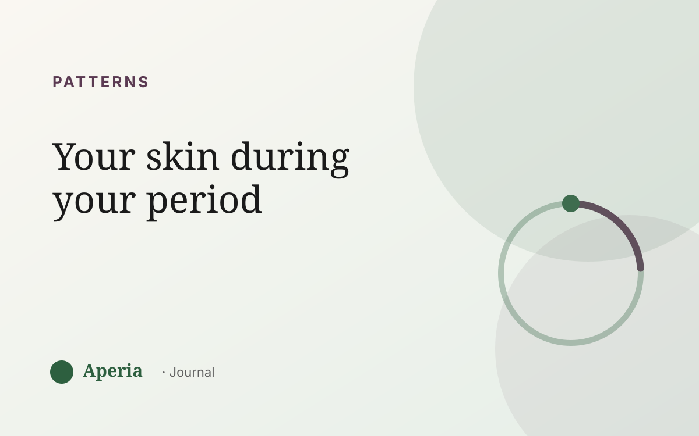

Patterns
What happens to your skin during your period
Your skin runs a fairly predictable arc across the month, driven by the hormones rising and falling underneath it. Once you can see the arc, the changes stop feeling random and start feeling like something you can anticipate.
The days before (the premenstrual flare)
In the week before your period, the hormonal balance tips in a way that tends to increase oil and make pores clog more easily. This is the classic flare window — often on the chin and jaw. If your skin has a ‘worst week’, this is usually it.
During your period
Once your period starts, hormone levels are low. Some people find their skin starts to settle here; others notice it feels drier, duller or more sensitive because those low levels leave skin less plump and resilient. Both are normal — which one is yours is worth knowing.
Skin before your period and skin during it are two different states. Most people only remember the bad week.
The days after (the follicular lift)
As your period ends and one of the key hormones begins to rise again, many people hit their best skin stretch — clearer, calmer, with a bit of natural glow. This is the upswing of the wave.
Why yours might look different
Not everyone follows the textbook. Sleep, stress and food layer on top of the hormonal wave, so a high-stress, low-sleep period week can look very different from a calm one. That's exactly why watching your own skin beats reading a generic timeline.
See your own arc
Aperia scores your skin by zone and lines it up with your cycle, so your personal arc — flare week, calm week, glow week — becomes visible. Once you can see it, you can plan around it.
Common questions
Why do I break out during my period?
Most period-related breakouts actually start in the days before your period, when the hormonal balance increases oil and clogs pores. The flare often peaks around when your period begins, then settles as hormone levels stay low.
Does skin get better during your period?
For some people, yes — skin starts to calm once the premenstrual flare passes. Others find it gets drier or more sensitive because hormone levels are low. Both are common; tracking shows which pattern is yours.
Why is my skin dry during my period?
Low hormone levels during your period can leave skin less plump and more sensitive, which some people experience as dryness or dullness. Gentle hydration and a steady routine help through that week.
When is skin clearest in the cycle?
Often in the follicular phase — the week or so after your period — when a key hormone rises and skin tends to be calmer and clearer.
See your own skin pattern
Track your skin and your cycle together. Free to start.
Download on the App StoreAperia is a self-knowledge tool, not a medical service. It helps you understand and track your skin; it doesn't diagnose, treat or cure anything. If you're concerned about your skin, talk to a qualified professional.